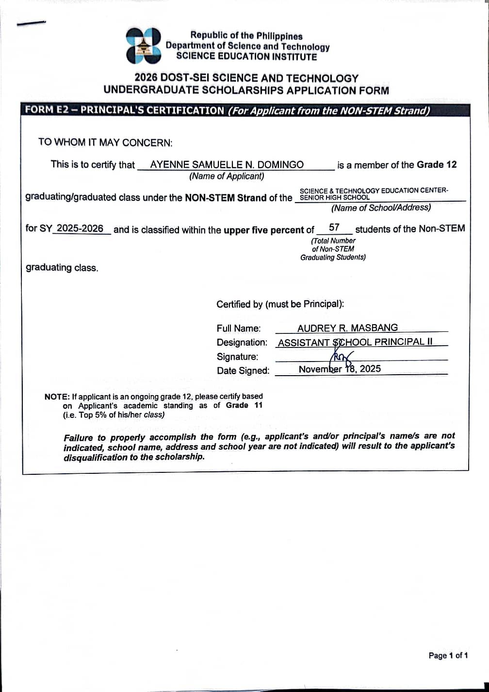

Hello, Future Me!
This page captures the essence of my work immersion journey. It was a crucial step in developing patience, meticulous data handling skills, and professional coordination. Every day brought new insights into the realities of an educational setting.
Core Immersion Learnings
- ✅ Data Encoding & Validation
- ✅ Document Organization & Filing
- ✅ Team Coordination & Networking
- ✅ Public Speaking & Logistics
- ✅ Basic Graphic Design (Canva)
"Being careful and double-checking all scores and names is crucial, as someone's grades are truly in our hands."

Proactive Planning Pays Off
Utilizing 'free time' during immersion to compile personal documents and scout scholarship requirements (like DOST) was a major game-changer for my future plans.
"It is hard to scan for scores and names as it is very tedious, especially if a sheet is unorganized. Organization must always come first."

TEAMWORK MAKES THE DREAM WORK
Learned so much collaborating with Atom, Law, and Pounds.
A Heartfelt Thank You 🙏
My gratitude goes to Ma'am Crischel Lyn Abayon and Ma'am Alona A. Pioquito. Their guidance provided the foundation for every skill I developed and practiced during this immersion program.

"Preparation, creativity, and teamwork are the backbone of a successful program."